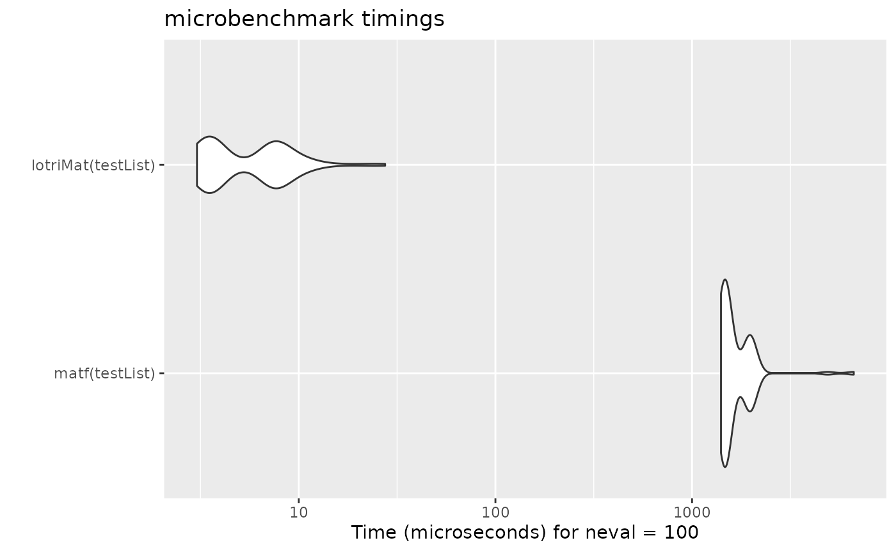

Lotri Motivation
Matthew Fidler
2024-08-14
Source:vignettes/lotri-motivation.Rmd
lotri-motivation.RmdMotivation
This was made to allow people (like me) to specify lower triangular
matrices similar to the domain specific language implemented in nlmixr.
Originally I had it included in RxODE, but thought it may
have more general applicability, so I separated it into a new
package.
For me, specifying the matrices in this way is easier than specifying them using R’s default matrix. For instance to fully specify a simple 2x2 matrix, in R you specify:
With lotri, you simply specify:
I find it more legible and easier to specify, especially if you have a more complex matrix. For instance with the more complex matrix:
To fully specify this in base R you would need to use:
mat <- matrix(c(1, 0.5, 0, 0, 0,
0.5, 1, 0, 0, 0,
0, 0, 1, 0, 0,
0, 0, 0, 1, 0.5,
0, 0, 0, 0.5, 1),
nrow=5, ncol=5,
dimnames= list(c("a", "b", "c", "d", "e"), c("a", "b", "c", "d", "e")))Of course with the excellent Matrix package this is a
bit easier:
library(Matrix)
mat <- matrix(c(1, 0.5, 0.5, 1),nrow=2,ncol=2,dimnames=list(c("a", "b"), c("a", "b")))
mat <- bdiag(list(mat, matrix(1), mat))
## Convert back to standard matrix
mat <- as.matrix(mat)
##
dimnames(mat) <- list(c("a", "b", "c", "d", "e"), c("a", "b", "c", "d", "e"))Regardless, I think lotri is a bit easier to use.
Creating lists of matrices with attached properties
lotri also allows lists of matrices to be created by
conditioning on an id with the | syntax.
For example:
mat <- lotri({
a+b ~ c(1,
0.5, 1) | id
c ~ 1 | occ
d +e ~ c(1,
0.5, 1) | id(lower=3, upper=2, omegaIsChol=FALSE)
})
print(mat)
#> $id
#> d e
#> d 1.0 0.5
#> e 0.5 1.0
#>
#> $occ
#> c
#> c 1
#>
#> Properties: lower, upper, omegaIsChol
print(mat$lower)
#> $id
#> d e
#> 3 3
#>
#> $occ
#> c
#> -Inf
print(mat$upper)
#> $id
#> d e
#> 2 2
#>
#> $occ
#> c
#> Inf
print(mat$omegaIsChol)
#> $id
#> [1] FALSEThis gives a list of matrix(es) conditioned on the variable after the
|. It also can add properties to each list that can be
accessible after the list of matrices is returned, as shown in the above
example. To do this, you simply have to enclose the properties after the
conditional variable. That is et1 ~ id(lower=3).
Combining symmetric named matrices
Now there is even a faster way to do a similar banded matrix
concatenation with lotriMat
testList <- list(lotri({et2 + et3 + et4 ~ c(40,
0.1, 20,
0.1, 0.1, 30)}),
lotri(et5 ~ 6),
lotri(et1+et6 ~c(0.1, 0.01, 1)),
matrix(c(1L, 0L, 0L, 1L), 2, 2,
dimnames=list(c("et7", "et8"),
c("et7", "et8"))))
matf <- function(.mats){
.omega <- as.matrix(Matrix::bdiag(.mats))
.d <- unlist(lapply(seq_along(.mats),
function(x) {
dimnames(.mats[[x]])[2]
}))
dimnames(.omega) <- list(.d, .d)
return(.omega)
}
print(matf(testList))
#> et2 et3 et4 et5 et1 et6 et7 et8
#> et2 40.0 0.1 0.1 0 0.00 0.00 0 0
#> et3 0.1 20.0 0.1 0 0.00 0.00 0 0
#> et4 0.1 0.1 30.0 0 0.00 0.00 0 0
#> et5 0.0 0.0 0.0 6 0.00 0.00 0 0
#> et1 0.0 0.0 0.0 0 0.10 0.01 0 0
#> et6 0.0 0.0 0.0 0 0.01 1.00 0 0
#> et7 0.0 0.0 0.0 0 0.00 0.00 1 0
#> et8 0.0 0.0 0.0 0 0.00 0.00 0 1
print(lotriMat(testList))
#> et2 et3 et4 et5 et1 et6 et7 et8
#> et2 40.0 0.1 0.1 0 0.00 0.00 0 0
#> et3 0.1 20.0 0.1 0 0.00 0.00 0 0
#> et4 0.1 0.1 30.0 0 0.00 0.00 0 0
#> et5 0.0 0.0 0.0 6 0.00 0.00 0 0
#> et1 0.0 0.0 0.0 0 0.10 0.01 0 0
#> et6 0.0 0.0 0.0 0 0.01 1.00 0 0
#> et7 0.0 0.0 0.0 0 0.00 0.00 1 0
#> et8 0.0 0.0 0.0 0 0.00 0.00 0 1
mb <- microbenchmark(matf(testList),lotriMat(testList))
print(mb)
#> Unit: microseconds
#> expr min lq mean median uq max
#> matf(testList) 1290.528 1338.147 1553.28356 1377.746 1815.463 6199.499
#> lotriMat(testList) 3.036 3.622 6.01665 6.888 7.499 15.139
#> neval
#> 100
#> 100
autoplot(mb)